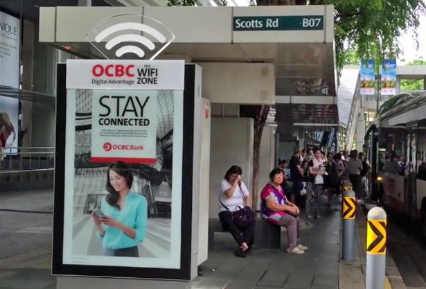

러시아 이민자 출신 캐나다인 비탈리크 부테린(Vitalik Buterin)이 2014년 개발한 가상화폐이다. 거래 명세가 담긴 블록이 사슬처럼 이어져 있는 블록체인(blockchain) 기술을 기반으로 하며 인터넷만 연결되어 있으면 어디서든 전송이 가능하다.
거래소에서 비트코인으로 구입하거나 비트코인처럼 컴퓨터 프로그램으로 채굴해 얻을 수 있다.
한국에는 2016년 3월 이더리움 거래소가 마련되었다. 그러나 2016년 초 1달러 수준이었던 1이더(이더리움 화폐 단위)가 같은 해 4월에는 12달러 안팎까지 오르는 등 실물 화폐에 비해 가격변동이 심해 안정성이 문제되고 있다. [네이버 지식백과] 이더리움 (시사상식사전, pmg 지식엔진연구소)